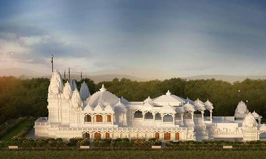

Spread over a lush expanse of 223 acres, envisioned by our founder, Pujya Gurudevshri Rakeshji, the Ashram is a spiritual sanctuary for seekers from all walks of life and with varied interests, faiths and ages. Be it study of texts or listening to discourses, immersing in yoga or meditation, connecting through devotional bhajans or engaging in selfless ‘seva’- each spiritual activity at Shrimad Rajchandra Ashram, Dharampur is designed to tap into a deeper dimension, allowing you to bloom into an awakened existence.
There is only so much that words can convey, and we would love for you to experience for yourself, these mesmerising sights and spiritually charged vibrations so that you can fall in love with this spiritual oasis. A few attractions of our ashram are -
The spiritual valley -
which boasts the glorious Jin Mandir, Shri Dharampur Tirth standing atop its highest peak, akin to a celestial palace - forged with Indian architecture and charged by Indian values. It also is the site of the world's tallest statue of Shrimad Rajchandraji, standing tall at 34 feet. The serenity of this blissful canyon will transport you to a different world entirely.
Tranquil Gardens -
To add to the spiritual atmosphere the ashram is adorned with 7 beautiful, themed gardens which offer a retreat from the chaotic world, allowing one to unwind and reflect, surrounded by nature at its finest.
Satsang Halls, Meditation Complex & Yoga facilities -
To nourish the body, mind & soul we have edifying discourses, numerous yoga courses that range from a few days to several months. We also offer meditation retreats, 'Sadhana Bhatti', a space for spiritual seekers looking to explore the subtle depths of the self.
Youth and children's activities -
The ashram hosts retreats for teenagers twice a year, giving children an introduction to spirituality through fun-filled activities and games rooted in value education. The Youth Festival witnesses young adults from all over the world congregate once a year to celebrate the single common threat of spirituality that unites them all. Through this, we ensure the future of India is one of culture, values, and tradition.
Social Initiatives -
One can witness & experience the joy of giving through 50 + holistic and multi-pronged charitable initiatives in the region which are powered by Pujya Gurudevshri’ s compassionate vision & genuine empathy of highly motivated volunteers. Focused on the welfare of people, animals, and the environment, the projects include schools, a science college, hospitals, animal shelters & an animal nursing home, women empowerment activities etc.
The grand Mahamastakabhishek Ceremony -
The grand Mahamastakabhishek Ceremony of the majestic 34 feet, world's tallest idol of Shrimad Rajchandraji conducted at Shrimad Rajchandra Ashram, Dharampur holds great devotional importance and is a very unique visual & cultural experience.
Thousands of seekers from India and other countries across the globe, including the USA, Canada, United Kingdom, Belgium, UAE, Oman, Australia, Kenya, Hong Kong, Singapore, New Zealand etc. partook in a magnificent celebration, which witnessed Pujya Gurudevshri Rakeshji's divine countenance immersed in overflowing veneration of Shrimad Rajchandraji. The Mahamastakabhishek comprised of worshipping Shrimad Rajchandraji with holy liquids of 5 colours – representing the 5 colours of the Panch Parmeshthi. Seekers experienced an inner cleansing as they beheld the abhishek on the splendid idol of Shrimadji.

How to Get There?
By Road
Nearest bus station Dharampur Depot, is around 2.7 km from Ashram.
By Train
The Nearest railway station is Valsad, for which it takes 46 min (30.9 km) to reach from Ashram.
By Air
The Nearest Airport is at Surat, which is located at a distance of approximately 104.8 km from Ashram and it takes about 2.8 hours to reach.